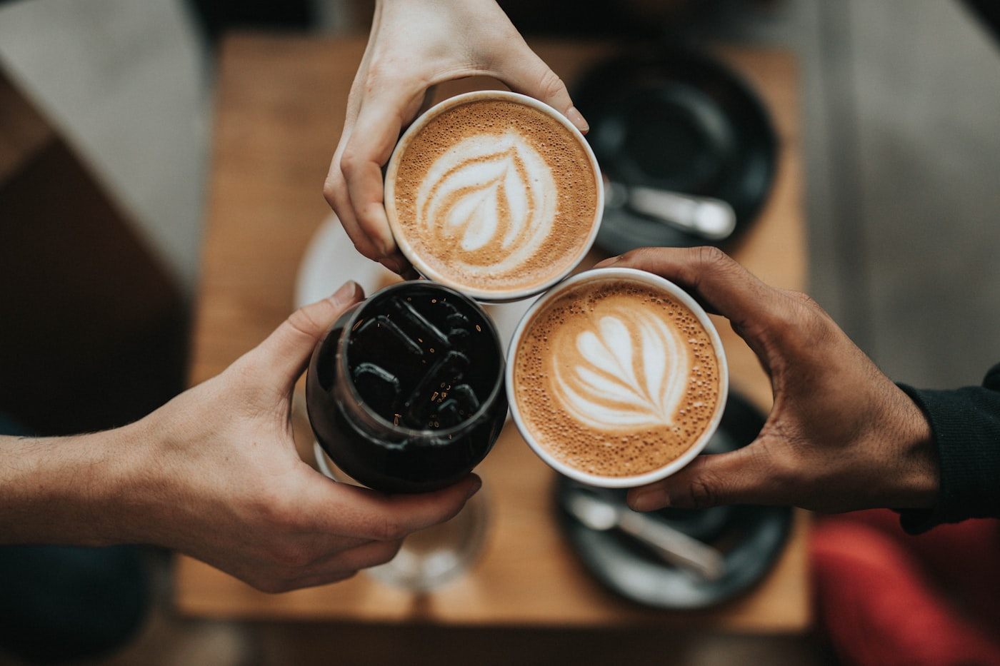
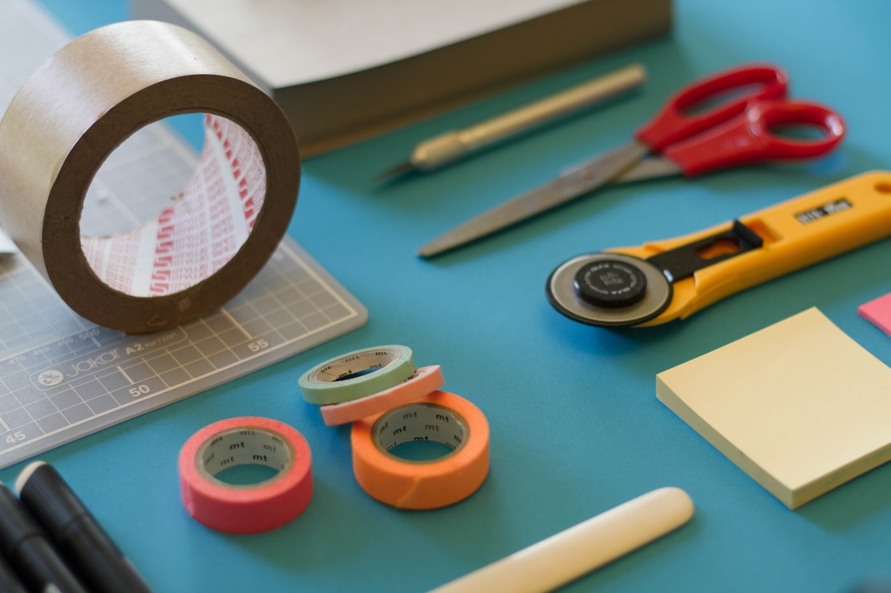
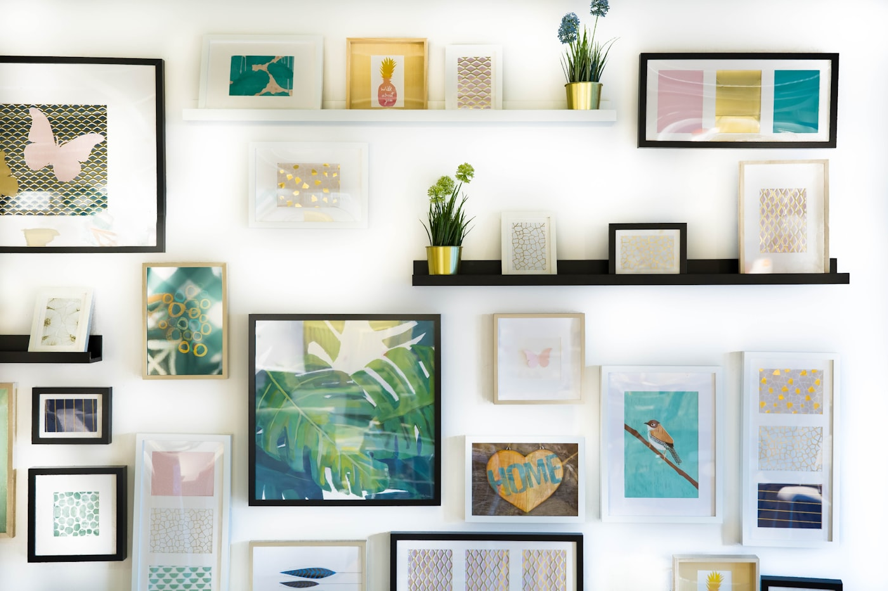
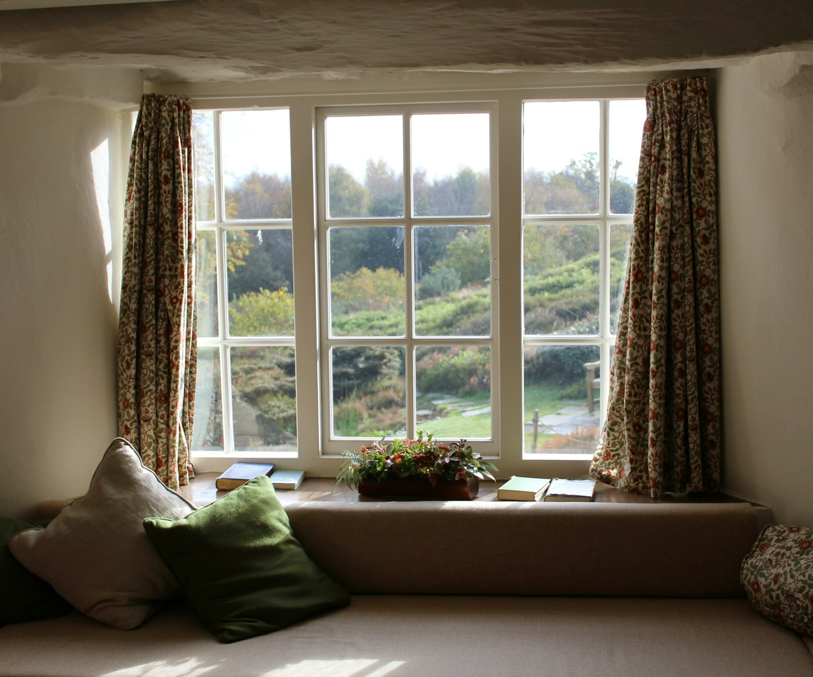

무명공방
쓰다 보면 손에 익는 물건을 만듭니다.
모양보다 오래 쓰는 것을 먼저 생각합니다.





만드는
순서
흙을 고르는 데 하루, 마르기를 기다리는 데 열흘. 굽는 시간은 그중 가장 짧습니다.
흙 고르기
쓸 자리에 맞춰 흙을 정합니다. 매일 쓰는 그릇과 한 해에 몇 번 쓰는 그릇은 흙부터 다릅니다.
물레
같은 모양을 열 번 올려 그중 둘을 남깁니다. 남는 쪽이 손에 붙는 쪽입니다.
깎기
굽을 깎아 무게를 잡습니다. 들었을 때 가볍다고 느끼는 자리가 따로 있습니다.
말리기
그늘에서 열흘. 서두르면 이때 갈라집니다. 가장 오래 기다리는 구간입니다.
초벌
800도에서 한 번. 여기서 살아남은 것만 유약을 입힙니다.
유약 · 재벌
1250도에서 열두 시간. 가마 문을 여는 순간까지 결과를 모릅니다.
유약 전 — 후 (가운데를 끌어 보세요)
잘 만든 것은 조용합니다.
자주 묻는 질문
대부분 처음 오십니다. 첫 주에는 흙을 만지는 것만 합니다. 네 주 과정이 끝나면 본인 그릇 두세 점을 가져가십니다.
말리고 두 번 굽는 시간이 있어 보통 4주에서 6주입니다. 수량이 많으면 나눠서 보내드립니다.
금이 간 정도는 금계(킨츠기)로 손봐 드립니다. 조각이 남아 있으면 가져오세요. 비용은 상태를 보고 말씀드립니다.
유약을 입힌 것은 괜찮습니다. 무유(유약 없는 것)는 손으로 씻어 주세요. 전자레인지는 금선이 들어간 것만 피하시면 됩니다.
공방
서울 성북구
평일 11:00–18:00
지금 서울 --:--
수업
물레 4주 과정
주 1회 · 3인 이하
매달 첫 주 모집
주문
개별 제작 문의
납기 4–6주
수량에 따라 조정
02-000-0000